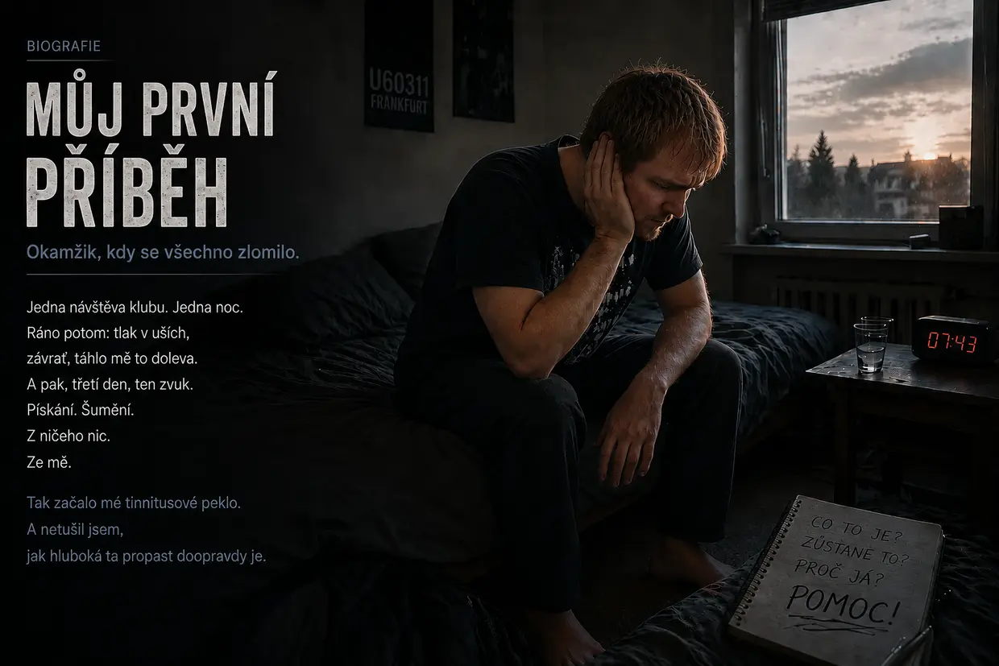
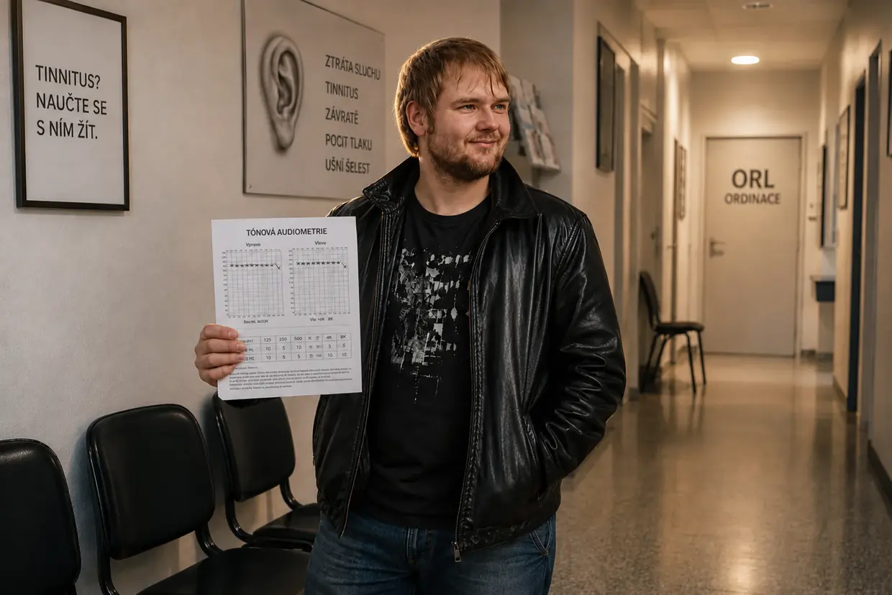

Moje cesta z tinnitusového pekla (krátká verze)
Ahoj, jmenuji se Dustin Müller.
Pokud právě čteš tuto stránku, nejspíš vězíš ve stejném pekle, v jakém jsem tehdy byl já. Kdo si chce přečíst podrobný příběh mého vyléčení, který čítá 9 000 slov, najde zde celou biografii.
Pokud hledáš rychlé odpovědi a hlavní linii: Tady je stručné shrnutí, jak jsem tehdy železnou logikou a biohackingem srazil svůj tinnitus ze 100 % na 0 %.
1. Kolaps (podzim 2011)
Bylo mi 23 let, byl jsem naprosto zdravý a myslel si, že moje tělo zvládne všechno. Jediná návštěva frankfurtského techno klubu (U60), přímo před basovým reproduktorem, stačila, aby mi vytáhla zástrčku. Ráno potom jsem se zpočátku probudil „jen“ s extrémní závratí, tupým tlakem v uších a silným tahem doleva. Myslel jsem, že si s tím tělo poradí. Třetí den se však probudilo skutečné monstrum: Najednou tu bylo pekelné pískání a šumění v levém uchu – a tiché pípání v pravém. Můj systém definitivně zkolaboval.
2. Selhání systému („Naučte se s tím žít“)
V panice jsem běhal od jednoho otorinolaryngologa (ORL lékaře) k druhému. Odpovědi, které jsem tehdy dostával, byly jako rána do obličeje: Sluch je prý trvale poškozený a musím se s tím „naučit žít“. Dokonce mi radili překrývat tón hudbou nebo „bílým šumem“ (maskování/TRT) a v případě potřeby mi nabízeli antidepresiva. Když jsem se touto radou řídil a dál se vystavoval hudbě a šumu, už přítomný tichý tón v pravém uchu se o několik dní později výrazně zhoršil.
Zpětně pro mě bylo toto „maskování“ fatální radou, která vedla k druhému, úplnému kolapsu: Ve slepé důvěře v lékaře jsem si během jízdy autem do školy pustil hlasitou hudbu, abych „odvedl pozornost“. To byla poslední kapka pro moje prázdné buňky. Ve škole náhle propukla brutální přecitlivělost na zvuk (hyperakuze), obraz se mi začal otáčet (vertigo-salto) a můj rovnovážný orgán byl kvůli zpětnému hromadění iontů v uchu úplně zaplaven (příznaky Ménièrovy choroby). Byl jsem zcela izolovaný a nedokázal už opustit dům.
3. Bod obratu: důkaz proti „fantomovému zvuku“
Specialista na tinnitus mi potom chtěl namluvit, že po několika měsících je můj tinnitus už jen „fantomovým zvukem“ v mozku. Protidůkaz mi přinesla náhoda: Při léčbě akutního zánětu zvukovodu na univerzitní klinice mi lékař odsál uši hlučným přístrojem. Přesně v té sekundě můj tinnitus fyzicky a bodově explodoval v reakci na tento hlukový podnět!
Pro mě to byla ledově jasná logika: Psychologický fantomový zvuk nereaguje v reálném čase na mechanický hluk. Můj tinnitus nebyl ničím pevným. Vadný zdroj stále seděl v uchu – a buňky při každém novém hluku křičely o pomoc.
4. Protokol ticha

Protože jsem ležel v nemocnici (kvůli neúspěšné kortizonové terapii), silné gázové obvazy moje uši na celé dny úplně izolovaly od okolního světa. Tam jsem poprvé zaznamenal skutečné ztišení tónu. Vyvodil jsem z toho důsledky, ignoroval všechny lékařské rady o „odvádění pozornosti“ a strávil měsíce v téměř absolutním tichu. Žádná hudba, žádná sluchátka, žádný každodenní hluk. Hlasitost mého tinnitu tím klesla asi o 25 % (pocitově, jasně – tinnitus se přece neměří pravítkem). Pak se však proces zotavování úplně zastavil. Moje tělo uvízlo.
5. Jiskra B12 (ledově jasná dedukce)
Absolutní průlom přišel znovu díky události v rodině. Můj otec si kvůli nervovému onemocnění píchal vysoké dávky vitaminu B12 a doslova rozkvetl.
V tu chvíli mi analyticky docvaklo: Od 15 let jsem byl vegetarián A ZÁROVEŇ jsem dlouho trpěl těžkou chronickou gastritidou (zánětem žaludeční sliznice). (Tu gastritidu jsem mimochodem teprve krátce předtím porazil pomocí minerálního jílu, probiotik a slupek psyllia – první důkaz, že se lékaři mohou mýlit!) Kombinace bezmasé stravy a nemocného žaludku byla dokonalým předpisem na obrovský nedostatek B12.
Poháněn touto logikou jsem si nechal od otce píchnout injekci do svalu. Důležité: Výslovně nedoporučuji napodobovat to bez lékařského dohledu. Druhý den ráno byl můj tinnitus výrazně tišší (zlepšení asi o 40 %)! Můj závěr: B12 je hlavním palivem pro tvorbu ATP. Moje buňky při hlukové zátěži spotřebovaly poslední ATP. Injekce zaplavila buňky energií, „buněčný motor“ znovu naskočil a v noci mohlo moje tělo opravovat.
6. Chybějící stavební materiál (buněčné membrány a myelin)
Navzdory B12 se můj tinnitus během dne znovu a znovu zhoršoval – zase zesílil. Důvod? Baterie se sice nabíjela, ale fyzická struktura buněk byla stále poškozená.
Při další bolestivé krizi (žlučníkové kolice) jsem náhodou narazil na lecitinový granulát, který mi na koliku pomohl. Důležité: Při žlučových kamenech vždy vyhledej lékařskou pomoc – tohle je moje zcela osobní zkušenost z akutní situace, nikoli rada k léčbě. Pouhé tři dny po první dávce lecitinu jsem byl najednou na zlepšení 60–65 % oproti výchozímu stavu!
Biologie v pozadí mě fascinovala: Lecitin (fosfolipidy) není důležitý jen pro obal nervů (myelinovou vrstvu), ale je základním hlavním stavebním materiálem každé buněčné membrány. Masivní oxidační stres z hluku na diskotéce udělal buněčné stěny mých přetížených vláskových buněk doslova křehkými a propustnými. Podle mého tehdejšího vysvětlujícího modelu dodával B12 energii (ATP) a lecitin buněčný cement, který měl poškozené vláskové buňky fyzicky znovu utěsnit a opravit předpokládaný uvolněný kontakt na sluchovém nervu.
7. „Carpet Bombing“ (stoprocentní vítězství)
Abych úzké hrdlo definitivně prolomil, zahájil jsem nemilosrdné ortomolekulární „Carpet Bombing“. Dodal jsem tělu všechno, co potřebovalo k opravě buněk:
- Vysoké dávky vitaminů skupiny B (B1, B2, B3, B5, B6, B9, B12) jako obchvat mého tehdy stále oslabeného žaludku
- 30 gramů lecitinu
- Aminokyseliny a 3 gramy nejkvalitnějšího omega-3 oleje
- Vitamin C, minerály (zinek, hořčík) a koncentráty životně důležitých látek (LaVita, Dr. Rath)
Postupné vyhasnutí:

S touto masivní zásobou živin a přísným dodržováním ticha se dynamika definitivně změnila. Tón byl ráno stále tišší a večerní propady stále kratší. Až přišlo jedno ráno, kdy jsem se probudil, pro kontrolu si zatlačil špunty hluboko do uší a narazil na absolutní, osvobozující smrtelné ticho. Stmívač byl na nule.
Podle mého tehdejšího vysvětlujícího modelu byla myelinová vrstva opravená, aktinová kostra vláskových buněk znovu stála a můj mozek vypnul nouzový zesilovač. Biologie zvítězila.
Vezmi to do vlastních rukou
Pokud vězíš ve stejné tmě, chci ti ukázat, že existuje naděje. Na tomto webu jsem přesně zdokumentoval biologické souvislosti, které jsem pro sebe objevil, i biohackingové kroky, jež vytáhly mé vlastní tělo z režimu oběti. Co s těmito informacemi uděláš a jak podpoříš biologii vlastního těla – ideálně po dohodě s lékařem – je zcela na tobě. Moje cesta je můj příběh. Je čas začít psát svůj vlastní.
Důležité upozornění:
To, co zde čteš, je moje osobní zkušenost. Každé tělo a každý příběh jsou jiné.

Pád do CFS a niacinový flush
Fatální řetězová reakce: pád do CFS
Kdo si myslí, že po vyléčení mého prvního tinnitu bylo všechno v pořádku, mýlí se. Tento život ohrožující kolaps však nebyl „cenou“ za vyléčení tinnitu, ale fatální řetězovou reakcí, která můj systém úplně vyvedla z rovnováhy.
Moje tělo mířilo přímo k propasti, uvězněné ve zrádném biologickém paradoxu: Hnal jsem se kupředu excesivním životním stylem v „overdrivu“. Krátkodobě mi to dodávalo spoustu energie a dokázal jsem hodně, zatímco moje rezervy stále více vyhořívaly. Nevšiml jsem si, jak moc tím svůj systém dlouhodobě vyčerpávám.
Směs nezpracovaného traumatu v pozadí, chemických následků kortizonu, tohoto nepřetržitého buněčného přestimulování a střeva úplně zničeného agresivními antibiotiky (a blokátory žaludeční kyseliny) mi definitivně podrazila nohy.
Když se k tomu přidal virus Epsteina–Barrové (infekční mononukleóza), můj systém úplně zkolaboval. Diagnóza: chronický únavový syndrom (CFS). Více než rok jsem byl téměř upoutaný na lůžko. Mitochondrie (buněčné elektrárny) téměř úplně zastavily tvorbu energie (ATP).
Slepá ulička za 6 800 eur a moje největší arogance

V zoufalství jsem bez rozmyslu nakupoval všechno možné. Od amerických velkých hráčů, jako jsou Life Extension nebo Thorne, přes drahé infuze vitaminu C až po léčbu KPU a hormonální substituční terapie. Vyzkoušel jsem simulovaný výškový trénink (IHHT), který jsem kvůli panice musel přerušit, a byl jsem jen krůček od přijetí na specializovanou kliniku pro CFS.
Za jediný rok jsem na tomhle šílenství bez nadsázky spálil přibližně 6 800 eur. Výsledek? Absolutní nula. Moje tělo nic z toho nepřijímalo.
Tragikomická ironie: Při nočním hledání jsem narazil na web německé firmy FitLine. Byl jsem na něm přesně čtyři nebo pět sekund, podíval se na jeho vzhled a arogantně si pomyslel: „Co je to za pitomý název módního sportovního nápoje? Potřebuji pořádnou medicínu, ne pestrobarevné džusy.“ Úplně jsem přitom přehlédl záruku vrácení 100 % peněz. Moje ego a moje polovičaté vědomosti mě stály mnoho dalších měsíců v pekle CFS.
2013: niacinový flush a buněčný restart
V absolutním bodě dna roku 2013 jsem byl téměř pořád – z 98 % – upoutaný na lůžko. Tehdy mi YouTube naservíroval video terapeuta s německým profesním označením „Heilpraktiker“, který vše vysvětloval neuvěřitelně celostně a kompetentně. Když jsem zjistil, že je ode mě jen 30 kilometrů, z posledních sil jsem se k němu dovlekl, protože moje matka už mě striktně odmítala vozit k dalším lékařům.
Rozmíchal mi ve vodě prášek – zářivě oranžovou tekutinu. Byl to přesně ten set FitLine, který jsem před nějakou dobou arogantně zavrhl!
To, co se stalo po šesti až osmi minutách, bylo naprosté šílenství: Vyvolalo to masivní niacinový flush. Celé tělo mi extrémně zteplalo, žilami se mi prohnala obrovská vlna prokrvení a kůže zrudla. Poprvé po více než roce jsem v buňkách cítil skutečnou fyzickou energii.
Skutečný problém: Moje tělo bylo v trojité blokádě. Zaprvé byl můj trávicí trakt kvůli dlouhodobému stresu a antibiotikům úplně vyvedený z rovnováhy (dysbióza). Zadruhé mému střevu jednoduše chyběla buněčná energie (ATP), aby dokázalo strávit pevné kapsle. A zatřetí byly moje buňky anaerobním nouzovým režimem natolik překyselené, že už téměř nepřijímaly živiny. Hladověl jsem na buněčné úrovni u plných talířů.
Tekutý, vysoce biologicky dostupný set živin tuto masivní blokádu vstřebávání náhle prolomil.
Odložil jsem hrdost a od té chvíle užíval produkty důsledně každý den. Výsledky byly téměř neskutečné:
- Po 20 dnech: Znovu jsem dokázal úplně normálně chodit po schodech.
- Po dvou měsících: Už jsem nebyl upoutaný na lůžko a mohl jsem zase naplno jezdit na kole.
- Po třech až čtyřech měsících: Absolvoval jsem počítačový kurz bez fyzického kolapsu.
- Po necelých dvou letech: Byl jsem fyzicky zdatnější než kdy dřív a pracoval pro Rewe online v extrémně tvrdé dřině – včetně dobrovolných dvojitých směn!
Nejšílenější experiment mého života

Toto těžce vydobyté poznání o buněčné energii bylo chybějícím klíčem k definitivní tinnitusové matrici. Protože moje buněčná nádrž ATP byla díky mé živinové rutině teď trvale nabitá na 200 % kapacity, nemohl jsem se zbavit této logické otázky: Při prvním případu tinnitu jsem měl sotva nějakou energii a musel jsem se na půl roku zavřít v tiché místnosti. Co se stane, když moje tělo teď, s touto obrovskou energií, znovu zasáhne hluk? Opraví se pak takříkajíc „za jízdy“ v běžném životě?
⚠️ Důležité upozornění: Než tento experiment popíšu, chci jasně říct, že jsem si při něm mohl způsobit i trvalé poškození. V žádném případě to nenapodobuj.
Udělal jsem rozhodnutí, které by každý lékař považoval za naprosto šílené: Zcela záměrně jsem si vyvolal druhý případ tinnitu, abych svou teorii dokázal na vlastním těle.
Tehdy jsem úplně odložil svou ochrannou opatrnost a pořádně slavil (jednak proto, že jsem se chtěl do experimentu pustit, a jednak proto, že jsem v sobě stále cítil obrovský hlad po životě – od mého zotavení z CFS uplynulo několik let). Během té noci jsem cítil jen dočasný varovný signál (pocit tlaku). Ten se však stal impulzem dohnat to do krajnosti. Celé týdny jsem uši nadměrně bombardoval hlasitou hudbou ze sluchátek – dokonce i když se poslech už změnil v čistou fyzickou bolest. Můj buněčný instinkt křičel, ale rozum bolest ignoroval.
Až přišel jeden večer: Seděl jsem u počítače, nasadil si sluchátka – a v náhlém tichu uslyšel jemné pípání v levém uchu. Tón byl zpátky. Na jedné straně čiré zděšení, na druhé šílená fascinace.
Abych pro svůj test „monstrum“ pořádně vypěstoval a hned ho neudusil svým ochranným štítem ATP na 200 %, udělal jsem ledově chladné, vysoce riskantní rozhodnutí: Přešel jsem do úplné karence (abstinence) od živin a záměrně vysadil svůj set FitLine i lecitin.
Kolaps, panika a důkazy v přímém přenosu
Trvalo jeden a půl až dva měsíce, než se můj systém pod touto trvalou provokací a bez ochranného štítu definitivně zhroutil. Tinnitus se vrátil s brutálními 75 % původní hlasitosti a doprovázel ho zcela nový zvukový chaos (typické sinusové pípání, bizarní signál připomínající Morseovu abecedu, hluboké syčení a siréna).
Když jsem večer ležel v posteli, realita mě tvrdě dostihla. Zvuky byly tak ohlušující, že ve mně vystřelila čirá panika: Nezničil jsem si tímhle pitomým experimentem život jednou provždy?
Než jsem však obrátil směr, otestoval jsem svůj systém doslova na jeho absolutní hranici zatížení:
- Test čelisti a krku: Rozsáhlými pohyby hlavy a čelisti jsem dokázal stoprocentně ovlivnit zvuk i hlasitost šelestu!
- Test šumem (důkaz proti maskování): Dvě až tři minuty jsem se vystavoval extrémně hlasitému bílému šumu (přesně tomu, který lékaři doporučují k maskování). Když jsem sluchátka sundal, nastalo na několik sekund absolutní smrtelné ticho, než se tinnitus rozeřval hlasitěji a agresivněji než kdy dřív. Můj ledově jasný důkaz na vlastním těle: Šum nutí nemocné vláskové buňky nepřetržitě pumpovat ionty. Po sundání sluchátek je baterie buňky úplně vybitá – na několik sekund je fyzicky mrtvá a „němá“ (refrakterní doba). Jakmile dobije minimum energie, nouzový signál se vrátí s dvojnásobnou hlasitostí!
- Test tlesknutím (mechanický šok): Silné tlesknutí rukama přímo před uchem způsobilo, že tinnitus přesně v té sekundě vztekle vybuchl.
Zotavení v běžném životě (bez „mnišského režimu“)
Druhý den ráno už toho bylo dost. Experiment dosáhl vrcholu. Spustil jsem návrat pomocí svého léčebného stacku:
- Kompletní set FitLine (Activize, Restorate, Basics a omega-3 s Q10).
- Lecitinový granulát z drogerie.
Jedna velmi zásadní věc tentokrát záměrně chyběla: Už jsem neužíval žádný hořký aminokyselinový prášek! Geniální systémová biologie v pozadí: Při prvním případu tinnitu jsem trpěl těžkou chronickou gastritidou a nedokázal štěpit bílkoviny z běžného jídla. Teď, o několik let později, bylo moje trávení po ozdravení střev dokonale funkční. Podle mého tehdejšího vysvětlujícího modelu si mohl můj zdravý trávicí trakt bez problémů získat aminokyseliny potřebné pro myelinovou vrstvu sám z běžné stravy.
Největší rozdíl: Vůbec se mi nechtělo znovu se odstřihnout od života jako poprvé. Můj hlad po životě byl po vítězství nad CFS jednoduše příliš velký. Zvolil jsem inteligentní kompromis: Důsledně jsem se vyhýbal extrémním hlukovým špičkám (žádné autorádio vytočené naplno, žádná sluchátka, žádné diskotéky), ale nestáhl jsem se úplně. Dál jsem chodil nakupovat, na pouť, do kina a žil relativně normálně.
Okamžik „Cože?!“ a absolutní ticho
Stalo se něco neuvěřitelného: Už během prvních týdnů (mezi druhým a třetím týdnem) jsem si najednou uvědomil: Ty jo, ten tón už reaguje!
Zvuky citelně zeslábly a prořídly. Nejdřív beze zbytku zmizelo to úplně nové syčení v levém uchu, potom citelně prořídl i nepřetržitý pískavý tón. Seděl jsem tam úplně ohromený a říkal si: „Cože?! Tak to je hustý… Vždyť tady vlastně dál žiju úplně normálně, jen se vyhýbám silným hlukovým špičkám, a stejně už to celé reaguje?!“
Můj proces zotavování trval přibližně tři až čtyři měsíce. Bylo to systematické vypínání jednotlivých frekvencí:
Nejprve se odmlčelo pravé ucho a tinnitus v něm po zhruba dvou měsících zcela zmizel. V levém uchu slábla siréna a hluboké dunění kamionu, až zůstal jen vysokofrekvenční sinusový tón (absolutní finální protivník).
Stejně jako při prvním případu tinnitu byly rozhodujícím ukazatelem ranní hodiny. Vypadalo to, jako by se ovladač posouval stále blíž k nulové linii. Ke konci třetího měsíce byl tón večer tak tichý, že jsem ho dokázal vnímat už jen se špunty v uších v naprosto tiché místnosti nebo v úplně tiché koupelně.
Abych to definitivně dotáhl, pořídil jsem si ještě speciální kapky vitaminu B12, které jsem si každý den kapal přímo pod jazyk, abych systému přes ústní sliznici dodal úplně poslední impuls.
A pak, někdy během následujících týdnů, byl úplně pryč. Zmizel. Beze zbytku. Na 100 %.
Obstál jsem v největší a nejnebezpečnější zátěžové zkoušce svého života. Teď jsem s ledově jasnou, absolutní jistotou věděl: Vyléčení tinnitu způsobeného hlukem není náhoda, štěstí ani mystický osud. Pro mě bylo logickým a nevyhnutelným výsledkem toho, že jsem své buňce dal přesně to, co potřebovala k vlastní opravě – a to dokonce uprostřed normálního každodenního života.
Krátce a upřímně na závěr (bez příkras)
Přesně vím, jak musí celý tento příběh nemoci a vyléčení působit na někoho zvenčí. Kdybych to všechno nezažil na vlastním těle – tu kaskádu absurdních „náhod“, počáteční vzpouru proti ORL lékaři, hluboký pád do CFS, neúspěšné terapie za 6 800 eur a nakonec ten šílený „moment z Matrixu“, kdy mi algoritmus YouTube naservíroval na obrazovku terapeuta s profesním označením „Heilpraktiker“, který mě zachránil a byl pouhých 30 kilometrů ode mě… sám bych to nejspíš odbyl jako laciný hollywoodský scénář nebo vymyšlenou pohádku. Zní to jednoduše příliš šíleně, než aby to byla pravda.
Právě proto tady ale vykládám všechny karty naprosto otevřeně na stůl. Tohle není vymyšlený příběh o vyléčení, marketingový trik, a už vůbec ne nepodložená ezoterika. Je to ledově jasná fyzikální a buněčná pravda. Vlastním každý jednotlivý fyzický důkaz tohoto pekla i tohoto vyléčení: své lékařské audiogramy s masivními propady v jednotlivých frekvencích, laboratorní zprávy, diagnózy a účty z klinik a od terapeutů.
Tohle všechno ti nevyprávím pro zábavu. Vyprávím ti to, protože jsem ten zatracený systém rozluštil – a protože toto poznání může zachránit tvůj sluch i tvoje noci.
📖 Chceš si přečíst celý příběh do detailu?
Tohle byla krátká verze ve dvou dějstvích. Celý příběh – každou audiometrii, každou zoufalou návštěvu ORL, každý průlom a každou chemickou reakci až do nejmenšího detailu – jsem sepsal v podrobné dlouhé verzi. Přibližně 9 000 slov, upřímně a bez filtru. Udělej si čaj. ☕
👉 Tady je dlouhá verze: 1. část: jízda peklem · 2. část: zkouška odolnosti